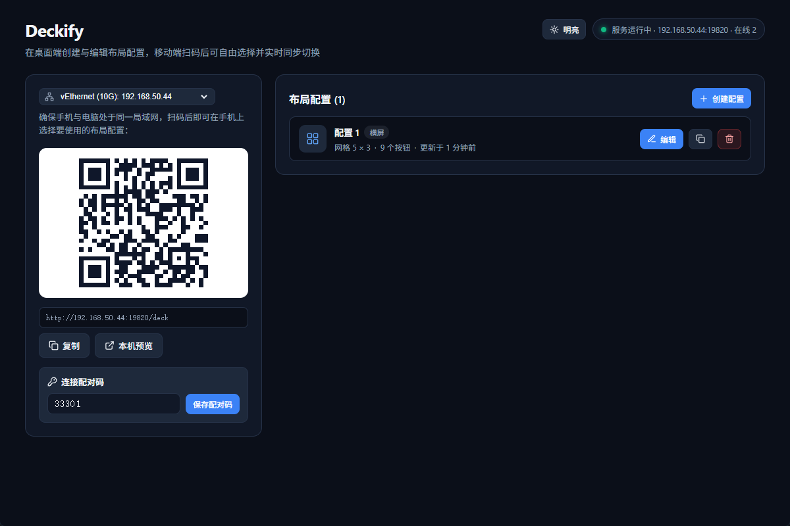

不用等安装，先在网页里点一点
下方是一个运行中的虚拟 Deckify 控制台。点击任意按键，体验按键触感、实时动作触发与动态硬件监控反馈！
专为极致桌面生产力打造
融合轻量级原生桌面技术与现代移动 Web 体验，带给你前所未有的智能副屏操控感。
零客户端安装，扫码即用
桌面端内置高性能 Axum HTTP + WebSocket 静态服务，启动后自动生成配对二维码。用手机或平板自带浏览器扫一扫即可连接，支持「添加到主屏幕」享受无任何浏览器顶底边栏的纯净全屏 PWA 体验。
Tauri 2 + Rust 极速底座
告别 Electron 臃肿的百兆内存开销！Deckify 采用 Tauri 2 搭配 Rust 后端，桌面端仅占用约 20MB 物理内存，CPU 负荷趋近于零，关闭主窗口后自动静默驻留系统托盘。
可视化多网格排版
随心所欲定义网格行数与列数（如 3x4、4x5、5x8），支持按键跨行跨列（colSpan / rowSpan），无论是紧凑按键还是超大仪表盘都能自由绘制。
智能应用扫描与纯净图标提取
彻底告别在文件夹里手动找图标的繁琐！Deckify 桌面端内置原生应用索引引擎，一键扫描 Windows 与 macOS 系统所有已安装应用，并从二进制可执行文件中提取高分辨率透明图标（彻底告别 Windows 快捷方式的左下角小箭头！）。
实时硬件状态遥测
每 1.5 秒从桌面端采集并广播 CPU 使用率、物理内存占用及网络上下行吞吐速率，直接在触控板上呈现动态条形进度与数值仪表，把手机变成电脑状态副屏。
纯局域网传输，隐私零泄露
数据仅在同一 Wi-Fi 或局域网内点对点加密传输，无需注册账号、无需公网中转服务器。内置多网卡 IP 快速切换，家庭与办公网络切换自如。
精心打磨的桌面管理端
简洁克制的高颜值界面设计，无论是配对网络还是精细调教按键，体验一气呵成。

首页与网络配对管理
桌面端启动后自动分配局域网 IP 与端口，支持多网卡快速切换、二维码扫码配对及在线设备状态监控。
内置 11 种核心动作类型
从简单快捷键到多步复杂编排，覆盖应用、系统、多媒体与智能工作流的每个细节。
应用启动 App
自动扫描本地所有安装应用，一键极速调起或前置指定软件窗口。
模拟快捷键 Hotkey
模拟单键或 Ctrl/Cmd/Alt/Shift 复杂组合键，支持按键重复触发。
文本自动录入 Text
一键自动模拟输入预设文本、常用提示词或代码片段，可配置自动回车。
多媒体控制 Media
播放、暂停、上一首、下一曲、系统音量微调与全局一键静音。
系统监控仪表 Monitor
每 1.5 秒更新 CPU 负荷、内存占用与网络上下行吞吐速率走势。
自动化宏指令 Macro
将快捷键、文本与自定义延迟（delayMs）顺序串联为一键执行的工作流。
面板布局切换 Switch Layout
在移动端一键平滑跳转到其他专属控制板，随心翻页无限拓展。
打开指定网址 URL
在电脑默认浏览器中快速打开工作台网址、文档或项目仓库。
Shell 终端命令 Command
执行自定义命令行或自动化脚本，极客开发者的绝佳副手。
HTTP Webhook Webhook
支持 GET/POST 请求发送自定义 JSON 载荷，联动 Home Assistant 或云端接口。
图片与状态看板 Image
按键支持自定义图片渲染与定时刷新，可用作动态状态展示板。
重新定义你的控制中心
相比昂贵笨重的物理控制台，发挥旧设备余热不仅更环保，且拥有无可比拟的自由度。
| 对比维度 | ✨ Deckify 软硬件结合方案 | 📦 传统物理 Stream Deck |
|---|---|---|
| 获取成本 | ✓ 完全免费开源（利用旧手机/平板） | ✗ 售价 ¥1000 - ¥2000+ |
| 屏幕与触控体验 | ✓ 手机/iPad 高清视网膜 OLED / 顺滑触控 | ✗ 低分辨率小型 LCD 软塑料微动按键 |
| 网格布局自由度 | ✓ 自由自定义行列（3x4/4x6/5x8）、跨行跨列 | ✗ 物理按键排布固定（如死板的 15 键） |
| 连接形态 | ✓ 局域网 Wi-Fi 无线连接，摆脱桌面线缆 | ✗ 必须占用电脑物理 USB 接口并接线 |
| 多设备协同 | ✓ 支持多部手机、平板同时在线协同工作 | ✗ 多台设备需重复购买多件昂贵硬件 |
| 移动端安装负担 | ✓ 零客户端！浏览器扫码即连 / 支持 PWA | ✗ 虚拟版要求月费订阅或安装专用客户端 |
三步快速开启高效体验
无需繁复配置，不到 1 分钟即可将你的移动设备打造成全能控制器。
运行 Deckify 桌面端
下载并启动 Deckify（支持 Windows 与 macOS）。桌面端会自动启动轻量级局域网服务，并在首页显示当前电脑的局域网 IP、端口与连接二维码。
手机扫码配对
确保手机/平板与电脑处于同一 Wi-Fi 局域网，打开相机或浏览器扫描二维码，输入配对码完成鉴权。推荐在浏览器菜单中选择「添加到主屏幕」开启纯净全屏。
自由编排专属布局
在电脑端点击「新建布局」或直接编辑预设，添加你喜爱的常用应用、多步宏指令、多媒体控制或硬件监控瓦片。手机端将实时自动同步最新按键。
下载 Deckify 桌面端
选择适合你操作系统的安装包，开启你的智能副屏时代。
Windows 桌面端
适用 Windows 10 / 11 (64-bit)- 开箱即用，NSIS 现代化安装包
- 原生 GDI+ 纯净无角标应用图标提取
- 自动托盘后台驻留与轻量低占用
macOS 桌面端
适用 macOS 11.0+ (Universal)- Apple Silicon (M1/M2/M3/M4) 与 Intel 通用二进制
- DMG 一键拖拽安装或原生 .app 压缩包
- 内置 macOS 辅助功能权限状态侦测与快速跳转
想要自行从源码构建？
需要 Node.js 20+ 与 Rust 工具链支持：
git clone https://github.com/kyuuseiryuu/Deckify.git && cd Deckify && npm install && npm run tauri dev
常见问题解答
解答关于设备兼容、网络连接与系统权限的常见疑问。
是的！桌面端启动时会自动在本地局域网开启一个内嵌的轻量级 HTTP Web 服务器和 WebSocket 通道。移动设备只需打开 Safari、Chrome 或任意现代浏览器，扫描二维码访问该网页即可。
我们强烈建议你在移动端浏览器中点击「分享 / 选项 → 添加到主屏幕」，即可利用现代 PWA（渐进式 Web 应用）技术，以全屏无地址栏的形式运行，并自带防息屏唤醒锁（WakeLock），体验完全不输原生客户端！
Deckify 的核心设计理念是纯本地局域网（LAN）零云端传输以确保极致的低延迟和隐私安全。因此，手机/平板需要与电脑处于同一个局域网（例如连接同一个无线路由器或电脑开启的移动热点）。
如果电脑拥有多个网卡（例如同时连了有线网、Wi-Fi、虚拟机或 WSL 虚拟网卡），你可以在 Deckify 桌面端首页右上角轻松一键切换要绑定的局域网 IP。
几乎无感知！得益于 Rust 的高并发异步网络库 Axum 与 Tokio，WebSocket 消息在局域网内的往返时间通常在 1ms ~ 3ms 之间。配合原生键鼠模拟驱动，点击瞬间即在桌面端完成响应。
由于 macOS 严格的安全沙盒机制，模拟全局键盘敲击需要系统授权。请打开「系统设置 → 隐私与安全性 → 辅助功能 (Accessibility)」，将 Deckify 添加或开启授权开关。授权完成后无需重启，即可正常模拟所有快捷键与自动化输入。
Windows 系统则开箱即用，无需额外设置辅助功能权限。
完全支持！Deckify 的服务端支持多客户端长连接并发。你可以在左边放一台 iPhone 作为多媒体与麦克风切换台，右边立一块旧 iPad 作为开发效率与系统监控仪表盘，两者各自选择不同面板独立工作，互不干扰。
支持！在布局编辑器中，每一个按键槽位都可以单独配置 跨列数 (colSpan) 和 跨行数 (rowSpan)。例如硬件监控的大表盘可以设为 2x2，核心播放键可以设为 2x1，满足你对专业排版的所有想象。